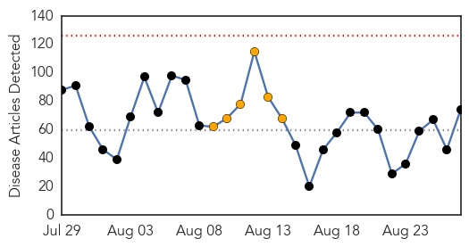

30 Day Trends
Web: 0 alerts, 6 warnings
Twitter: 4 alerts, 0 warnings
Top Articles:
- 0.993
- MERS virus kills 19 in seven days in Saudi: Ministry
- 0.971
- Taiwan issues travel alert ...｜Society｜WCT
- 0.948
- Hong Kong police college shuts gym and pool after 21 recruits contract hand, foot and mouth disease
- 0.945
- Scientists report major step in development of universal flu vaccine
- 0.940
- Throwback Thursday: The Forgotten Pandemic
- 0.934
- How to avoid the most common back-to-school illnesses
- 0.922
- Brightly coloured bags act as flu reminder for parents
- 0.919
- Rabies: A life threatening disease
- 0.917
- Chicago Tribune
- 0.917
- Chicago Tribune
- 0.917
- Chicago Tribune
- 0.916
- Birmingham Zoo bird aviary might have exposed visitors to bacterial disease
- 0.916
- N.Y. officials to test South Bronx areas for Legionnaires'
- 0.909
- Lyme disease more common in Bay Area than previously thought
- 0.901
- How to avoid the most common back-to-school illnesses
- 0.899
- Utah man dies of plague days after CDC issues warning
- 0.898
- Borehole water sold by individuals poses risks
- 0.895
- Eight cases of Legionnaires disease confirmed at Illinois Veterans Home
- 0.895
- Rabies vaccines scarce for Ctg division poor
- 0.893
- Taiwan issues travel alert for Middle East over MERS concerns
- 0.891
- Bird flu will take four months to contain: experts
- 0.887
- Pneumonic Plague Kills Eight in Madagascar — Naharnet
- 0.880
- ADPH issues precautionary notice to those who have visited Birmingham Zoo’s Lorikeet Aviary in past 30 days
- 0.877
- Mounting Concern over African Swine Fever in Estonia
- 0.859
- Pneumonic plague kills eight in Madagascar
- 0.854
- Taiwan confirms first case of Brucellosis in four years
- 0.842
- Petroleum minister seeks help from JP Nadda to investigate the infant deaths in Cuttack
- 0.830
- Mesa County woman diagnosed with tularemia after recreating in the Ruby Horsethief Canyon area along the Colorado River
- 0.828
- Pneumonic Plague Infects 12 and Kills 8 People in Madagascar
- 0.816
- Risks and benefits of HPV vaccine for boys
- 0.814
- ADPH warns Birmingham Zoo visitors about bacteria that can pass
- 0.790
- Birmingham Zoo lorikeet aviary tests positive for bacterial disease
- 0.773
- Risks, benefits of hpv vaccine for boys
- 0.755
- Toxic blue-green algae pose increasing threat to nation's drinking, recreational water
- 0.754
- West Chester University says buildings safe from legionella bacteria
- 0.747
- CVS Corporation (NYSE:CVS) - CVS Health Announces New Clinical Affiliations with St. Luke's University Health Network and TriHealth
- 0.742
- Some pharmacies are already receiving their flu shots to prepare for the flu season
- 0.742
- State Health Department has warning for recent visitors of the Birmingham Zoo
- 0.741
- Lush conditions fuel Colorado increase in rabbit fever
- 0.698
- Health officials: Utah man in his 70s dies from plague
- 0.697
- Patients being given unnecessary meds
- 0.689
- Cases of human contact with bats on the rise in El Paso County
- 0.686
- El Nino set to return with a vengeance
- 0.685
- Texas teen fighting a brain-eating amoeba after swimming in lake > KAGS TV
- 0.677
- Police dismantle France’s oldest Roma slum
- 0.677
- Varoufakis will not participate in ‘sad’ Greek elections
- 0.677
- Palme d’Or-winner ‘Dheepan’ brings migrant drama to French screens
- 0.663
- Texas teen has deadly infection after contact with amoeba
- 0.645
- E. coli Outbreak in Canada Sickens 24 People
- 0.626
- Vaccine for son cuts risk to women
Showing top 50 articles...
Top Tweets:
-
No tweets found for Aug 27, 2015
Web/News Articles
Tweets

Article Locations